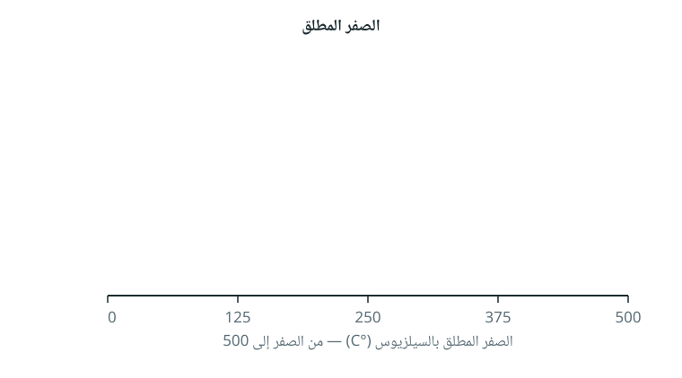

الصفر المطلق
Absolute zero
الصفر المطلق هو الحد الأدنى النظري لدرجة الحرارة، ويعادل 0 كلفن أو −273.15 درجة مئوية. عنده تنعدم الطاقة الحرارية المتاحة، لكن حركة نقطة الصفر الكمّية لا تنعدم.
الصفر المطلق هو الحد الأدنى النظري لدرجة الحرارة في المقياس المطلق، ويعادل 0 كلفن و−273.15 درجة مئوية و−459.67 درجة فهرنهايت. وهو الحد الذي تنعدم عنده الطاقة الحرارية المتاحة للتحويل، لا الحد الذي تنعدم عنده كل حركة: فمبدأ عدم اليقين يفرض وجود طاقة نقطة صفر كمّية تبقى عند الصفر المطلق، وهي طاقة لا يمكن سحبها. ولا يمكن بلوغ الصفر المطلق عملياً في زمن محدود، لأن سحب الحرارة يتطلب فرقاً في درجة الحرارة، والفرق يتلاشى كلما اقتربنا منه. وقد وُصل عملياً إلى كسور من الميلي كلفن في مختبرات التبريد بالليزر والتبخير المغناطيسي. مثال: الهيليوم يبقى سائلاً عند الضغط الجوي حتى الصفر المطلق، ولا يتجمد إلا تحت ضغط نحو 25 ضغطاً جوياً.
كيف تعمل الظاهرة؟
التبريد يعمل بسحب الحرارة من نظام إلى نظام أبرد، وهذا يتطلب فرقاً في درجة الحرارة. فكلما اقترب النظام من الصفر المطلق، ضعف الفرق المتاح، وضعفت كفاءة أي دورة تبريد، وصار سحب كل وحدة حرارة أصعب. ولهذا لا يُبلغ الصفر المطلق في زمن محدود. وفي درجات الحرارة المنخفضة جداً تظهر ظواهر كمّية: التكاثف بوز-أينشتاين، والسيولة الفائقة في الهيليوم، وفوق التوصيل. وفي هذه الحالات لا تبقى الحرارة الكلاسيكية وصفاً كافياً، لأن الطاقة الحرارية المتاحة تقترب من الصفر لكن طاقة نقطة الصفر تبقى.
العلاقة بالأرقام
0 K = −273.15 °C = −459.67 °F. والطاقة الحرارية المتوسطة لكل درجة حرية = ½kT، وعند T = 0 تبقى طاقة نقطة الصفر. وكفاءة كارنو η = 1 − T_C/T_H، وتقترب من 1 حين يقترب T_C من الصفر، لكن القدرة على سحب الحرارة تقترب من الصفر. مثال: مبرد بين 300 K و4 K كفاءته القصوى النظرية η = 1 − 4/300 = 0.987، لكن الشغل المطلوب لسحب حرارة محدودة يزيد كثيراً عملياً.
مفاهيم متقاربة
الصفر المطلق ليس صفر سيلزيوس: الفرق 273.15 درجة. وليس سكوناً تاماً: طاقة نقطة الصفر تبقى. وليس حداً قابلاً للبلوغ: هو حدّ مقارب. ولا يعني أن كل مادة تتجمد: الهيليوم يبقى سائلاً عند الضغط الجوي. والصفر المطلق ليس صفر طاقة داخلية، بل صفر طاقة حرارية متاحة للتحويل. ولا يجوز الخلط بينه وبين النقطة الثلاثية للماء 273.16 K، وهي نقطة مرجعية لا حدّ أدنى.
حدود التطبيق
لا تُقاس درجات حرارة قريبة من الصفر المطلق بمقاييس غازية، لأن الغاز يتكاثف. وتُستعمل مقاييس مغناطيسية وضوئية. وفي هذه الدرجات لا تبقى الديناميكا الحرارية الكلاسيكية وصفاً كاملاً، ويلزم الوصف الإحصائي الكمّي. ولا يُستعمل الصفر المطلق كنقطة إسناد في حسابات هندسية بلا تحويل صريح. ولا يجوز الادعاء ببلوغ الصفر المطلق: القانون الثالث يمنع ذلك في زمن محدود.

| الكمية | القيمة | المصدر |
|---|---|---|
| الصفر المطلق بالسيلزيوس | −273.15 °C | [1] |
| النقطة الثلاثية للماء | 273.16 K | [3] |
المصادر
- 1 The International System of Units (SI), 9th edition (2019) — BIPM — Bureau International des Poids et Mesures (2019). www.bipm.org/en/publications/si-brochure · اطُّلع عليه 2026-11-21
- 2 The International System of Units (SI), 9th edition (2019) — BIPM — Bureau International des Poids et Mesures (2019). www.bipm.org/en/publications/si-brochure · اطُّلع عليه 2026-11-21
- 3 NISTIR 5078: Thermodynamic Properties of Water — Tabulation from the IAPWS Formulation 1995 — NIST — National Institute of Standards and Technology (1998). nvlpubs.nist.gov/nistpubs/Legacy/IR/nistir5078.pdf · اطُّلع عليه 2026-11-21
استشهد بهذا المصطلح
الصيغتان مبنيتان من بيانات الصفحة نفسها: العنوان والتاريخ ورابط النسخة المنشورة.
الصفر المطلق — Absolute zero. (2026). ديوان المعرفة — انفراد. https://infiradev.com/diwan/terms/term-absolute-zero.html
@misc{term-absolute-zero2026,
title = {الصفر المطلق},
titleaddon = {Absolute zero},
howpublished = {{ديوان المعرفة — انفراد} — مرجع علمي عربي},
year = {2026},
url = {https://infiradev.com/diwan/terms/term-absolute-zero.html},
urldate = {2026-11-26},
note = {مراجعة علمية: hermes (مراجعة معتمدة 2026-11-26)}
}
راجعه: hermes (مراجعة معتمدة 2026-11-26) · 2026-11-26 · آخر تحديث 2026-11-21